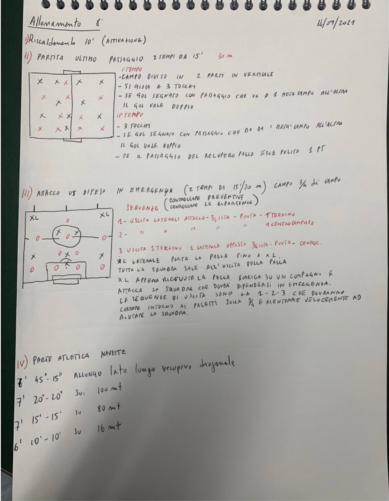

Precampionato · Allenamento 8
GliImbattibili
Dai quaderni dell'allenatore, l'ottava seduta della Juniores che ha vinto il campionato provinciale senza perdere una partita.

Dai quaderni dell'allenatore, l'ottava seduta della Juniores che ha vinto il campionato provinciale senza perdere una partita.
| I | Riscaldamento Attivazione | 10' |
| II | Partita “ultimo passaggio” Campo diviso in due parti in verticale · gol doppio se nasce da un passaggio da una metà all'altra · 2 tempi da 15' | 30' |
| III | Attacco contro difesa in emergenza Sequenze di uscita: chi esce gira intorno ai paletti e rientra mentre la squadra difende la ripartenza · 2 tempi da 15-20' | 30-40' |
| IV | Parte atletica · navette Intermittente a tempi decrescenti · blocchi da 7', 7', 7' e 6' con 3' di recupero | 36' |
Obiettivo: cercare l'ultimo passaggio che cambia lato. Il gol vale doppio se arriva dopo un passaggio da una metà all'altra.
Partita con porte. Si attira l'avversario su un lato e poi si cambia metà con l'ultimo passaggio.
Obiettivo: controllare le preventive e le ripartenze. La squadra deve difendersi in inferiorità mentre chi è uscito rientra di corsa.
| 1 | Escono i 2 laterali d'attacco, il trequartista, la punta e un terzino |
| 2 | Escono i 2 laterali d'attacco, il trequartista, la punta e un centrocampista |
| 3 | Escono un terzino, il laterale opposto, il trequartista, la punta e un centrocampista |
Il laterale porta palla fino all'XL e tutta la squadra sale. L'XL scarica su un compagno e attacca: la squadra si difende in emergenza.
I giocatori della sequenza girano intorno ai paletti e rientrano velocemente ad aiutare.
Obiettivo: resistenza alla velocità. Stessi blocchi degli Allenamenti 4 e 5, ancora più lunghi.
| 7' | 45"-15" | 15" di allungo sul lato lungo, 45" di recupero sulla diagonale |
| 3' | Recupero | 3 minuti di recupero prima del blocco successivo |
| 7' | 20"-20" | 20" di corsa su 100 m, 20" di recupero |
| 3' | Recupero | 3 minuti di recupero prima del blocco successivo |
| 7' | 15"-15" | 15" di corsa su 80 m, 15" di recupero |
| 3' | Recupero | 3 minuti di recupero prima del blocco successivo |
| 6' | 10"-10" | 10" di navetta su 16 m, 10" di recupero |
In ogni blocco si alterna il tratto di corsa al recupero, con i tempi indicati in tabella.
Tra un blocco e l'altro 3 minuti di recupero.